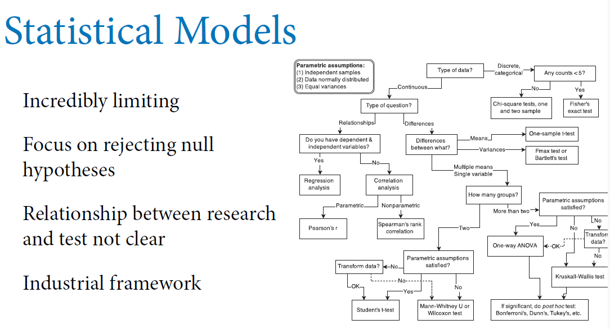
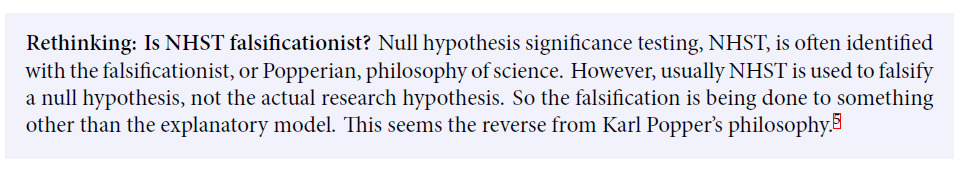
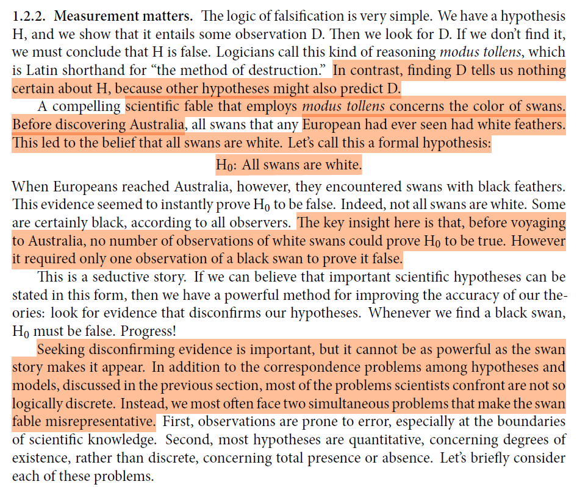
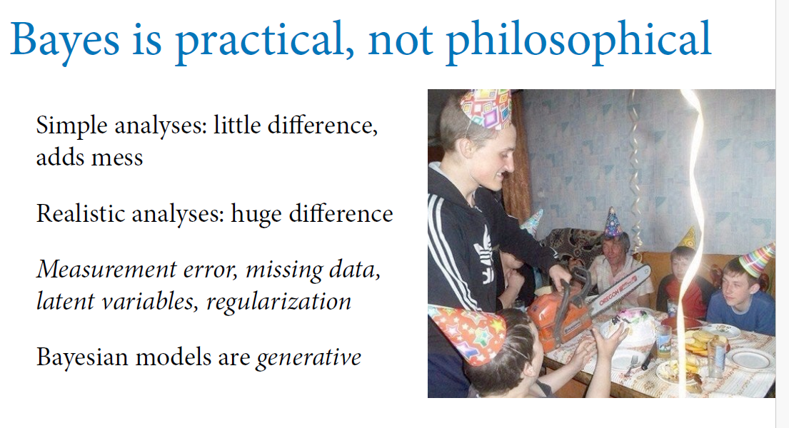

Code
# First we load the libraries and data
library(tidyverse) # This lets you create plots with ggplot, manipulate data, etc.
# Load data# First we load the libraries and data
library(tidyverse) # This lets you create plots with ggplot, manipulate data, etc.
# Load dataGreat book about doing statistical casual inference using Bayesian data analysis and other related tools.
The author using interesting analogies and stories to explain complex ideas and concepts e.g. Golems (statistical models) and Garden of Forking Data (Counting possibilities)
The tools for “Golem engineering” proposed in the book are: 1. Bayesian Data analysis 2. Model comparison 3. Multilevel models 4. Graphical casual models (aka DAGs - Directed Acyclic Graphs)
…
An introductory chapter that uses the metaphor of “The Golem of Prague” to explain how statistical models can cause harm in the real world, hence we need to engineer them with best in class statistical practices and tools, to avoid mistakes.
This builds on his talk about “Science as Amateur Software Engineering”, available here: https://youtu.be/8qzVV7eEiaI - where he makes the case that too many research scientists treat their research like a hobby, and that actual professional standards are needed to avoid making research mistakes that create “Golems” that negatively impact the world.
He especially makes the case for statistical rethinking (section 1.2) because he believes that classical statistical inference methods (as taught in school and university) focuses too much on significance testing a model’s null-hypothesis, arguing that Karl Popper said that the goal of the scientific method is to find disconfirming evidence (i.e. falsification)

He argues that statistical procedures should falsify hypotheses not models because “Hypotheses are not models”

Evidence > Theory > Models

He also makes the case the measurement error is very common in how statistics is practiced today because of the tendency to focus on falsifying models, and not the actual research hypothesis.

Richard argues that it addresses many of the issues related to measurement error and hypotheses being treated as models. However, the Bayesian approach is overkill for most simple analysis (kind of like using a Chainsaw to cut a cake) . Bayesian is best for relatively larger-scale analysis in scientific research, where measurement error, missing data, latent variables are rampant.


…
…
…